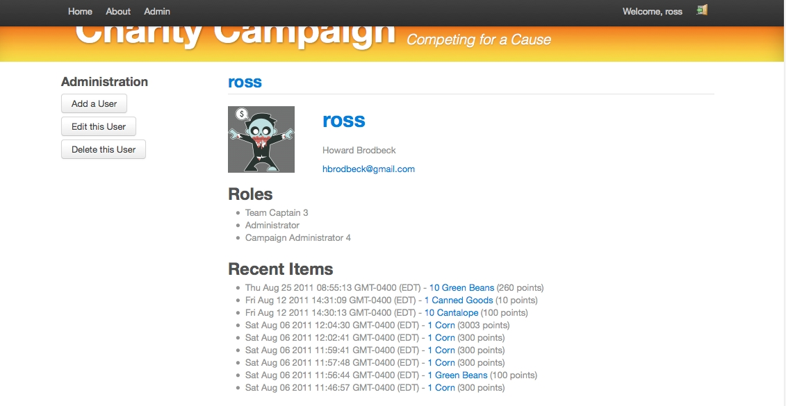
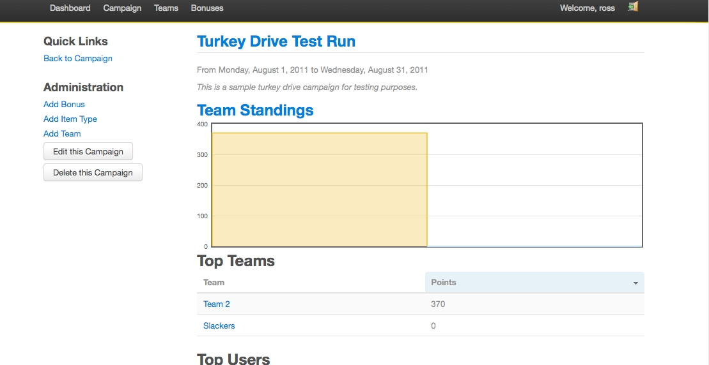
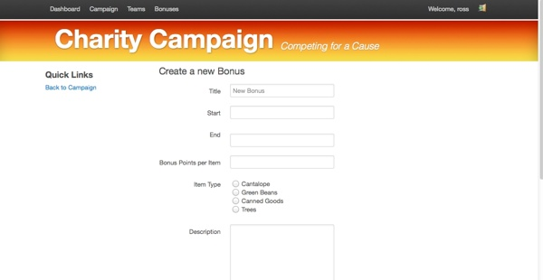
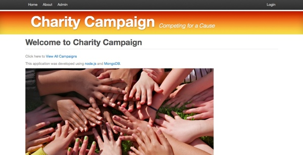

Charity Campaign is a node.js application for competitions to help others.
Here are couple of screenshots:
fig 1 - User Profile Screen
fig 2 - Team Standings
fig 3 - Add a bonus
fig 4 - Home Screen
More information is available at the github repository.